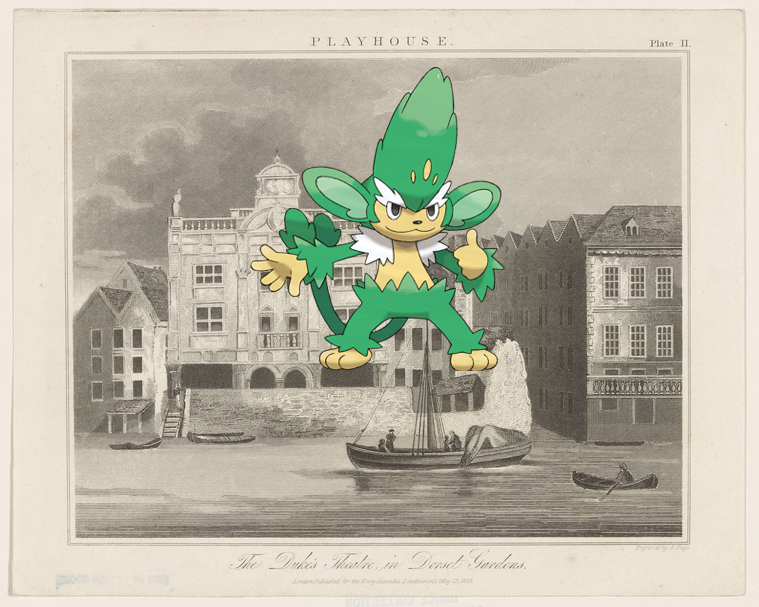
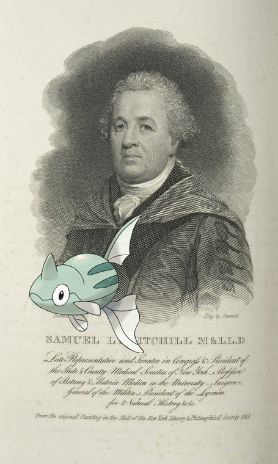
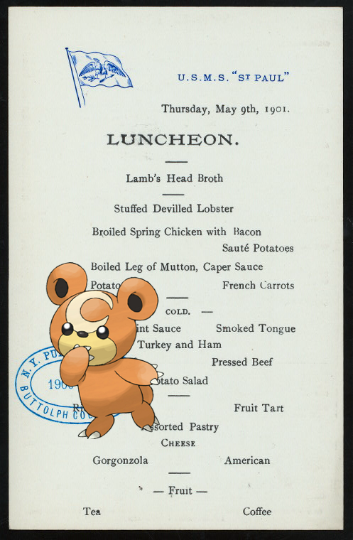

-
Raikou on Daniel D. Tompkins
-
Litwick on Bissell, T.P.!
-
Axew @ Dapper men.
-
Emolga on Embroidery in bullion from Tunis.!
-
Granbull | Migrant's home, California..
-
Omastar, , Patrat ; Danakil Women
-
Simisage | The Duke's theatre in Dorset Gardens
-

-
Breloom on Meade, Nathan B..
-
Tentacool, Throh @ Letter to the President, Vice President, and Directors of the New York Athenaeum.
-
Poliwhirl, Manaphy @ 1873 May 21-1875 Aug 30!
-
Lucario ; Two Guitars.
-
Koffing, , Snivy @ Faun & bacchante!
-
Remoraid – Samuel L. Mitchill, M. and LL.D.
-

- 
-
![Latias on Ticknor, [William D.], ALS to. Apr. 6, 1860.! http://digitalcollections.nypl.org/items/f3a8b840-4d45-0130-7b1d-58d385a7bbd0](media/finding-fxvKjkEQ.png)
-
![Alakazam, Pidove | LUNCHEON [held by] HOTEL ALCAZAR [at]](media/finding-XMYjdIsG.png) Alakazam, Pidove ; LUNCHEON [held by] HOTEL ALCAZAR [at] "ST. AUGUSTINE, FL" (HOTEL;)!
Alakazam, Pidove ; LUNCHEON [held by] HOTEL ALCAZAR [at] "ST. AUGUSTINE, FL" (HOTEL;)! -
Bonsly, Phantump on Garcilaso de la Vega..
-
Pidove – Jeune fille Hottentote..
-
![Glalie ; Phtah- Sokari [Ptah-Sokaris]. (Phtha enfant, Héphaistus, Harpoctare.)! http://digitalcollections.nypl.org/items/333048a0-c6d4-012f-c931-58d385a7bc34](media/finding-NszjVbWC.png)
-
Zygarde, Flaaffy ; Louis XVI Roi de France
-

-
![Garchomp, Manaphy ; [Two designs; one with roundel of enthroned Athena, one with bible scene.] http://digitalcollections.nypl.org/items/f9f5ba20-c6e7-012f-a263-58d385a7bc34](media/finding-eFpFFpDq.png) Garchomp, Manaphy on [Two designs; one with roundel of enthroned Athena, one with bible scene.]
Garchomp, Manaphy on [Two designs; one with roundel of enthroned Athena, one with bible scene.] -
![Simisear + Letter to the General Assembly [of North Carolina]. http://digitalcollections.nypl.org/items/a52c6860-002d-0130-a73b-58d385a7bc34](media/finding-NOgpHCZv.png)
-
![Floatzel @ A LA CARTE MENU [held by] PURE FOOD CAFE [at] 102 MADISON ST. ? (REST;)! http://digitalcollections.nypl.org/items/cf1a4310-c537-012f-4669-58d385a7bc34](media/finding-RpKaPqGB.png)
-
 Golbat @ Block Index. Volume Two
Golbat @ Block Index. Volume Two -

-
 Zigzagoon + Class B: suits; No. 2. The new Military sack suit..
Zigzagoon + Class B: suits; No. 2. The new Military sack suit.. -
![Raticate @ Sligo [or] Thy land's my land! http://digitalcollections.nypl.org/items/2dd4f0b0-c58e-012f-ef27-58d385a7bc34](media/finding-wflpNPpH.png) Raticate | Sligo [or] Thy land's my land!
Raticate | Sligo [or] Thy land's my land! -
Monferno, Floette ; Ethan Allen.!
-
Venomoth + Hotel Berlin!